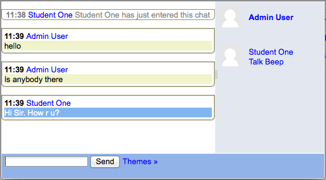
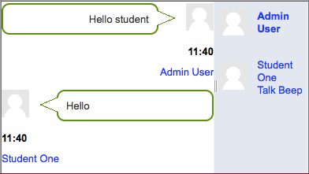

- In normal view, the screen is in two parts with the participants on the right, the messages on the left and a box at the bottom into which users type their message and press “Send” to make their contribution.

- Users can change the appearance of the messages by clicking on “Themes” next to the “Send” button. Bubbles appears thus.
The chat module contains some features to make chatting a little nicer.
Smilies - Any smiley faces (emoticons) that you can type elsewhere in Moodle can also be typed in here and they will be displayed correctly.
Links - Internet addresses will be turned into links automatically.
Emoting - You can start a line with /me to emote. For example, if your name is Kim and you type /me laughs! then everyone will see “Kim laughs!”
Beeps - You can send a sound to other people by hitting the “beep” link next to their name. A useful shortcut to beep all the people in the chat at once is to type “beep all”.
HTML - If you know some HTML code, you can use it in your text to do things like insert images, play sounds or create different coloured and sized text.
Users with the capabilities to export chat session which they took part in or export any chat session can download or export past chat sessions to any portfolio enabled by the administrator. If Portfolios have not been enabled, then users will not see a link to “Export” chat sessions.
Chat has an advantage over a Forum in that it takes place in Real Time. It is especially beneficial when the group chatting is not able to meet face to face. Examples might be:
- Regular meetings of staff on large or split campuses to discuss student or curriculum issues;
- Regular meetings of students doing online courses to enable them to share experiences with others on the same course but potentially in a different city (or country)
- A teacher working with his students even though he is out of school
- A student temporarily unable to attend in person chatting with their tutor to catch up with work.
- Students out on work experience getting together to discuss their experiences with each other and their tutor. * Younger children using chat at home in the evenings as a controlled(monitored) introduction to the world of social networking
- Unless a tutor/moderator is permanently present in the chatroom -or unless the chat is hidden and revealed at certain times, it is difficult to control what is said once a chat has started.
- Younger students particularly may find it difficult to stay on task and be prone to adding non-useful comments or “beeping” others for the sake of it.
- In some situations, a forum might be preferred as it allows for reflection before posting and gives a period of time where the post might be edited.